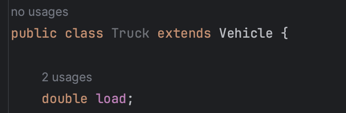
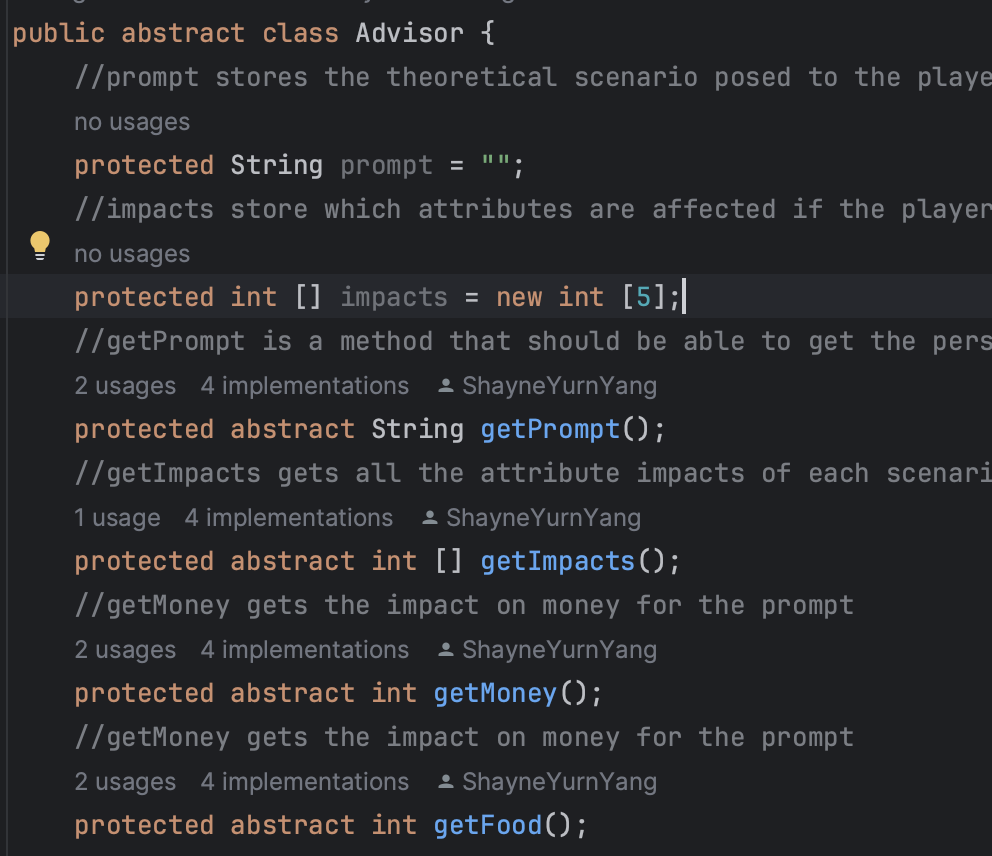

Inheritance is when the subclasses (children) extend the parent/super class and has the same methods and attributes as the parent.
The super keyword can also be used to call all of the superclass methods. This is particularly used in the constructor.
This code represents how truck is a subclass of the vehicle superclass
Abstract data classes can either be abstract or standard.
Abstract classes must be declared with the keyword abstract after public and replaces void. Plus, they cannot make new instances, but they can only set fields and methods.
A subclass must be created from an abstract class in order for it to be able to be run. Abstract classes can be benefical when the fields of a subclass need to be very different.
Advisor is an abstract class with both standard and abstract fields.